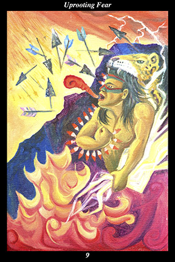

 | IMAGE: A male warrior, wearing war paint and a jaguar headdress, stands at the mouth of a cave and utters a battle cry that sounds like a jaguar's roar. In one hand he holds the power of the lightning and its thunder and fire. His other arm is clenched, forming a shield of obsidian knives. The flight of arrows is broken and stopped in flight. |
INTERPRETATION:
This hexagram represents the indomitable intent of those who will not be overcome by fear or insecurity. The male warrior symbolizes the way of testing and training human nature that increases its versatility and fortitude. His war paint and battle cry mean that you do not hesitate to show your resolve through direct speech and direct action. The cavern and jaguar headdress, both symbols of the feminine half of the spirit warrior, mean that you do not hesitate to conceal your deeper intentions within the feints and stratagems of indirect action. Taken together, these symbols mean that you withstand every inner and outer test of nerves the way a mountain withstands every individual raindrop. Wielding the lightning’s fire and thunder means that you can concentrate the energy of the creative forces and direct it toward making matters known, using the power of fire to illuminate and the power of thunder to resound. Forming a shield of obsidian knives means that you invoke the law of equal action and reaction, defending yourself solely by adopting the patient strength of those who no longer try to keep destructive people from destroying themselves. Stopping the arrows in flight means that the spiritual protection you cultivate succeeds in making you impervious to harm. Taken together, these symbols mean that you have prepared well for this battle and have nothing to fear.
ACTION:
The masculine half of the spirit warrior protects the feminine half from physical, emotional, and spiritual harm. Only a whole-hearted commitment to the proper course of action will stand you in good stead—only through clarity of vision, firmness of will, and consistency of action will you be able to act with the courage and conviction needed to prevail against those in the wrong. When we can no longer make excuses for oppression and coercion, then we find what it is that is worth fighting for: it is at just such a juncture that we commit to a course of action that improves our lives, refines our character, and broadens our compassion. This is a time for hardening your heart against even the slightest of fears and closing your mind to even the remotest possibilities of failure. Take up the symbols of this hexagram and make yourself like this spirit warrior and you will not only pass through the trial unscathed, but you will bring
benefit to others in ways impossible to imagine at present. Because your motive is pure and your reasoning sound, you act without doubt or hesitation.
INTENT:
By pulling out the weeds of fear and indecision when they first appear, you will acquire the inner power to break up stagnation and free up
benefit so that it might fulfill its corresponding need once again. In such a time, it is necessary to coordinate your forces in response to events. When you must confront matters, do so unemotionally, speaking the truth without exaggeration or distortion. When you are attacked, defend your spirit in private without responding to taunts or intimidation in public. Act with the daring of one who has gambled everything on a single throw of the dice, advancing when you are expected to withdraw and withdrawing when you are expected to advance. Do not hesitate to make allies of those within the opponent’s camp, thereby allowing doubt and fear to take root among those who sought to sow it.
SUMMARY:
Your path takes you into unknown lands without any clear sense of where you are being led. You are fully committed to this course now and there is no turning back. Set your will firmly on the goal and banish all worrying and second thoughts from your mind. All this is meant to be, so proceed with unshakeable confidence and optimism. Move like a jaguar among rabbits.
THE LINE CHANGES
1° Those in power are arrogant and care nothing for the well-being of those under them. This makes it a tempting time to mobilize popular support in an effort to oust such villains. But such efforts can succeed only if supported nearly unanimously—proceed slowly and seek more allies.
2° Conflicting interests tug at you, forcing you to decide between them. You cannot belong to both groups, so you will have to choose between personal ambition and more altruistic motives. Don’t drag your feet—the tension will last only as long as you remain undecided.
3° Those in power are distant and do not care that people strain without end at meaningless work. No one seems to be able to take the reins and guide matters back on course—true leaders would admit their mistakes and ask for popular support in correcting them. Maintain your neutrality for now.
4° Your motives are noble and your ambitions worthwhile, so you need to investigate fully before committing to this proposal. Do not mar your reputation by associating with those of questionable ethics. The best ending arises from the best beginning—give preference to proven performance.
5° Those in power have isolated themselves and grown deaf to any voice but their own. Do not call down retaliation upon yourself by speaking out at this time. Rather than trying to start any new projects, now is the time to withdraw and wait for the old to collapse under its own weight.
6° It is possible to become dependent on anything, so that even a strength becomes a weakness if relied on too much. Examine your habits of body, emotion, memory, and thought, resolving to rid yourself of destructive ones. The time-tested method is to replace them with spiritual leanings.